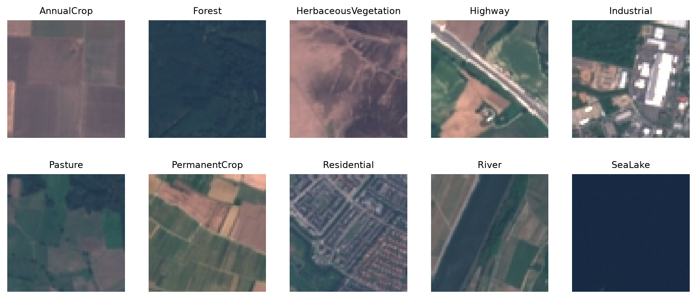
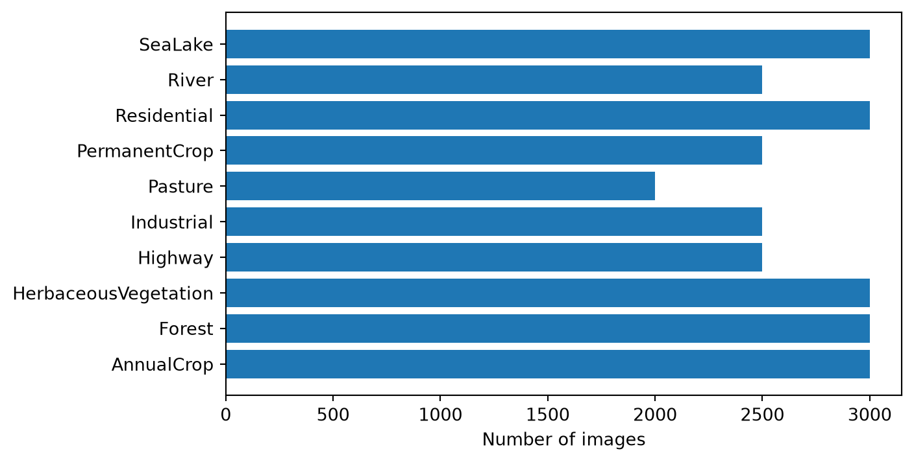

from collections import Counter
from pathlib import Path
import datasets as hf
import torch
from matplotlib import pyplot as plt
from PIL import Image
from torch.utils.data import Dataset, random_split
from torchvision.datasets import EuroSATDatasets
While the last section used synthetic data, projects usually require real data.
In this section, we look at three ways to obtain data: Torchvision built-in datasets, Hugging Face Hub, and your own data, read with a custom class.
Our working dataset: EuroSAT
EuroSAT [1] is a set of 27,000 small (64 × 64 pixels) RGB patches from Sentinel-2 images, each labelled with one of 10 land-use classes. It is distributed under an MIT licence.
It is a good fit for us: real research data (remote sensing), yet small enough to download and train on quickly, even on modest GPUs.
Setup
By default, Hugging Face downloads datasets into ~/.cache/huggingface/hub and, once processed, saves them in ~/.cache/huggingface/datasets. To avoid everybody downloading and writing the same data, we can set the HF_HUB_CACHE and HF_DATASETS_CACHE environment variables to a shared location in /project:
import os
os.environ["HF_HUB_CACHE"] = "/project/def-sponsor00/hub"
os.environ["HF_DATASETS_CACHE"] = "/project/def-sponsor00/datasets"Note that you need to do this before importing any Hugging Face package.
If you use this method to share data among collaborators, a better option is to have everyone set the environment variables directly, for instance by adding to their .bashrc file:
export HF_HUB_CACHE="/project/def-sponsor00/hub"
export HF_DATASETS_CACHE="/project/def-sponsor00/datasets"Avoid sharing HF_HOME across users as it might contain tokens and other sensitive information.
torch.utils.dataholds the dataset machinery: theDatasetbase class andrandom_split.torchvision.datasetsprovides ready-made vision datasets,EuroSATamong them.datasetsis the Hugging Face data library.PIL.Imageopens image files andCounterwill tally labels.
Torchvision datasets
torchvision.datasets provides built-in computer vision datasets and base classes. Because they subclass torch.utils.data.Dataset, they implement the methods __init__ (running when the dataset object is created), __len__ (returning the number of samples in the dataset), and __getitem__ (returning one sample at a time). This means that you can pass them directly to the PyTorch DataLoader machinery for batching, shuffling, and parallel loading.
root = Path("/project/def-sponsor00/data")eurosat = EuroSAT(root=root, download=True)download=True fetches and extracts the archive into the chosen root directory (here /project/def-sponsor00/data) on the first run, then detects the files and skips the download. On disk, this is the classic layout, one folder per class:
/project/def-sponsor00/data/eurosat/2750/AnnualCrop/AnnualCrop_1.jpg
/project/def-sponsor00/data/eurosat/2750/AnnualCrop/AnnualCrop_2.jpg
/project/def-sponsor00/data/eurosat/2750/AnnualCrop/AnnualCrop_3.jpg
...
/project/def-sponsor00/data/eurosat/2750/Forest/Forest_1.jpg
/project/def-sponsor00/data/eurosat/2750/Forest/Forest_2.jpg
/project/def-sponsor00/data/eurosat/2750/Forest/Forest_3.jpg
...
Let’s explore the dataset:
print(eurosat)Dataset EuroSAT
Number of datapoints: 27000
Root location: dataprint(len(eurosat), "images")27000 imagesprint(eurosat.classes)['AnnualCrop', 'Forest', 'HerbaceousVegetation', 'Highway', 'Industrial', 'Pasture', 'PermanentCrop', 'Residential', 'River', 'SeaLake']print(len(eurosat.classes))10When the dataset is created, initialization scans the file names. To read in images, you index the dataset object:
img, label = eurosat[0]Images are stored as PIL images, not tensors. They will be converted to tensors in preprocessing:
print(type(img).__name__, img.size, img.mode)Image (64, 64) RGBeurosat.classes is a list of the 10 classes of land-use sorted alphabetically. The label associated with each image is the index of the class it belongs to:
print(label, eurosat.classes[label])
print(eurosat[4000][1], eurosat.classes[eurosat[4000][1]])
print(eurosat[9000][1], eurosat.classes[eurosat[9000][1]])
print(eurosat[12000][1], eurosat.classes[eurosat[12000][1]])0 AnnualCrop
1 Forest
3 Highway
4 IndustrialLet’s display one image for each class:
fig, axes = plt.subplots(2, 5, figsize=(12, 5))
for ax, cls in zip(axes.flat, range(len(eurosat.classes))):
img, _ = eurosat[eurosat.targets.index(cls)]
ax.imshow(img)
ax.set_title(eurosat.classes[cls], fontsize=9)
ax.axis("off")
Class balance
You should never trust a dataset to be balanced. Let’s check how balanced our dataset is.
eurosat.targets holds the labels. Let’s print the total per class:
counts = Counter(eurosat.targets)
for i, name in enumerate(eurosat.classes):
print(f"{name:>22} {counts[i]}") # >22 right-aligns for a nicer display AnnualCrop 3000
Forest 3000
HerbaceousVegetation 3000
Highway 2500
Industrial 2500
Pasture 2000
PermanentCrop 2500
Residential 3000
River 2500
SeaLake 3000We can visualize it with a quick bar chart:
fig, ax = plt.subplots(figsize=(7, 4))
ax.barh(eurosat.classes, [counts[c] for c in range(10)])
ax.set_xlabel("Number of images")
EuroSAT has 2,000 to 3,000 images per class: a mild imbalance. When classes are heavily skewed, a high accuracy can hide a model that ignores the rare classes entirely; we will come back to this when evaluating models.
Train and validation sets
Never evaluate a model on data it learned from.
We randomly split EuroSAT, 80% for training and 20% for validation:
train, val = random_split(
eurosat, [0.8, 0.2], generator=torch.Generator().manual_seed(42)
)
print(
f"Training set size: {len(train)} items\nValidation set size: {len(val)} items\nType: {type(train).__name__}"
)Training set size: 21600 items
Validation set size: 5400 items
Type: Subsetrandom_splitreturns twoSubsetobjects: thin views holding lists of indices fromeurosat. No image is copied, and the dataset interface (__len__and__getitem__) is preserved.- The seeded generator makes the shuffle reproducible.
random_split does not respect class balance. With EuroSAT’s mild imbalance, this hardly matters, but on small or heavily skewed data, draw a stratified split yourself (same class proportions in both parts).
Your turn:
Check that train and val are disjoint: no index should appear in both.
First hint: explore the attributes of
trainby typingtrain.followed by Tab.Second hint: sets have a method called
isdisjoint().
The rest of the course must evaluate on this exact validation set, or the results from different sections would not be comparable. Let’s save the index lists as a split.pt file in our data directory:
torch.save({"train": train.indices, "val": val.indices}, root / "split.pt")Hugging Face Hub
The Hugging Face Hub mirrors thousands of datasets, and researchers increasingly share their data there. The datasets library downloads and caches them, keeps the metadata with them, preprocesses them in parallel, and streams datasets too big to fit on disk.
There are 118 EuroSAT datasets on HF. blanchon/EuroSAT_RGB is by far the most popular and the most downloaded of them. If you look at the associated paper, you will see that it is the EuroSAT description paper [1]. This thus seems like the perfect dataset to use:
eurosat_hf = hf.load_dataset("blanchon/EuroSAT_RGB")
print(type(eurosat_hf))
print(eurosat_hf)<class 'datasets.dataset_dict.DatasetDict'>
DatasetDict({
train: Dataset({
features: ['image', 'label', 'filename'],
num_rows: 16200
})
test: Dataset({
features: ['image', 'label', 'filename'],
num_rows: 5400
})
validation: Dataset({
features: ['image', 'label', 'filename'],
num_rows: 5400
})
})The first call downloads the data into /project/def-sponsor00/datasets and converts it into Apache Arrow files; later calls hit the cache and return instantly. We get a DatasetDict of named splits: this copy of EuroSAT comes pre-split into train/validation/test.
Unlike in the Torchvision dataset, the labels come with the data (so they aren’t inferred from the folder structure):
train_hf = eurosat_hf["train"]
print(train_hf.features){'image': Image(mode=None, decode=True), 'label': ClassLabel(names=['Annual Crop', 'Forest', 'Herbaceous Vegetation', 'Highway', 'Industrial Buildings', 'Pasture', 'Permanent Crop', 'Residential Buildings', 'River', 'SeaLake']), 'filename': Value('string')}label_meta = train_hf.features["label"]
print(label_meta.names)['Annual Crop', 'Forest', 'Herbaceous Vegetation', 'Highway', 'Industrial Buildings', 'Pasture', 'Permanent Crop', 'Residential Buildings', 'River', 'SeaLake']print(train_hf[0]){'image': <PIL.PngImagePlugin.PngImageFile image mode=RGB size=64x64 at 0x7F02AEA52A50>, 'label': 0, 'filename': 'AnnualCrop_1.tif'}print(train_hf[0]["image"])<PIL.PngImagePlugin.PngImageFile image mode=RGB size=64x64 at 0x7F02AEE29D10>print(train_hf[0]["label"])0print(train_hf[0]["filename"])AnnualCrop_1.tifThe map() method applies a function to every item in the dataset and caches the result on disk, keyed by a fingerprint of the function.
For instance, to add to train_hf a new feature called “label_name” that contains the class name of each label as a string (using int2str()), we can run:
def add_label_name(example):
return {"label_name": label_meta.int2str(example["label"])}
train_hf = train_hf.map(add_label_name)
print(train_hf[0]["label_name"])Annual CropYou can run map() in parallel by passing a number of processes to the num_proc argument.
HF datasets satisfy the same __init__/__len__/__getitem__ class structure, so they plug into the same DataLoaders as everything else.
With .with_format("torch"), they return data and labels directly as tensors.
If you don’t want to download the data files, you can pass streaming=True to hf.load_dataset():
stream = hf.load_dataset("blanchon/EuroSAT_RGB", split="train", streaming=True)
first = next(iter(stream))
print(first["filename"])AnnualCrop_1.tifThis is useful to inspect datasets without downloading them, to save storage space for very large datasets, or when the processing pipeline is slow enough to hide the network latency.
Torchvision vs HF datasets
While both are equally convenient, there are key differences in design philosophies, file formats, and caching architectures between Torchvision and Hugging Face datasets that can lead to massive differences in disk usage and speed.
For our dataset, the Torchvision files take up ~90 MiB of storage, while the Hugging Face files take up ~770 MiB.
But this difference in storage comes with an efficiency trade-off: Torchvision datasets are designed to save bandwidth and storage for standard vision benchmarks, whereas Hugging Face datasets are engineered for high-performance data processing, random access, and zero-copy memory mapping.
Torchvision downloads datasets in their native, highly compressed distribution formats such as .tar, .zip, .gz, or raw PNG/JPEG images. PyTorch reads these archives directly or extracts them minimally.
Hugging Face converts and caches datasets into Apache Arrow files. Arrow is an in-memory columnar format optimized for blazing-fast data retrieval, filtering, and machine learning pipelines. This layout sacrifices storage space to maximize read speed and minimize CPU overhead during training. Additionally, the memory-mapping done by Apache Arrow allows your operating system to map the dataset on disk directly into virtual memory: instead of loading a 50 GB dataset into your physical RAM (which would crash your computer), your script reads it straight from disk as if it were in memory. For this to work efficiently without massive CPU stuttering, the data on disk must be structured in a predictable, aligned layout rather than being tightly squeezed inside a compressed archive that requires sequential decompression.
Custom Dataset
The most common situation of all: a folder of images on your machine, arranged in some way, that you need to train on. First, organize the images to have one folder per class. Then create a subclass of Dataset that processes your images adequately. With nice, clean data, it could look like this:
class ImageFiles(Dataset):
"""Images in one subfolder per class under root; labels from folder names."""
def __init__(self, root, transform=None, extensions=(".jpg", ".jpeg", ".png")):
# sorted: alphabetical class names give deterministic, portable label indices
self.classes = sorted(p.name for p in root.iterdir() if p.is_dir())
self.class_to_idx = {name: i for i, name in enumerate(self.classes)}
self.transform = transform
# scan the file list once walking class by class
self.samples = [
(path, label)
for label, name in enumerate(self.classes)
for path in sorted((root / name).iterdir())
if path.suffix.lower() in extensions
]
def __len__(self):
return len(self.samples)
def __getitem__(self, index):
path, label = self.samples[index]
# convert("RGB"): stray grayscale or RGBA files should not crash a training run
img = Image.open(path).convert("RGB")
if self.transform is not None: # used on the preprocessing page
img = self.transform(img)
return img, label__init__scans the tree once and stores(path, label)pairs: paths only, no image is opened.__getitem__opens one image per call: decoding on demand is what will let worker processes parallelize the reading.transformis the hook where preprocessing will plug in.
Let’s point it at the EuroSAT tree:
eurosat_custom = ImageFiles(root / "eurosat" / "2750")
img, label = eurosat_custom[0]
print(len(eurosat_custom), "images,", len(eurosat_custom.classes), "classes")
print(type(img).__name__, img.size, "->", label, eurosat_custom.classes[label])27000 images, 10 classes
Image (64, 64) -> 0 AnnualCropComparison with Torchvision
print(eurosat_custom.classes == eurosat.classes)Trueprint([lbl for _, lbl in eurosat_custom.samples] == eurosat.targets)TrueOur dataset agrees with Torchvision’s reader, class for class and label for label. If your data is messier, you can adapt this class to transform and tidy it. The section on data preprocessing of our deep learning course with the JAX AI stack goes into this in a lot more detail.
References
1.
Helber P, Bischke B, Dengel A, Borth D (2019) EuroSAT: A novel dataset and deep learning benchmark for land use and land cover classification. IEEE Journal of Selected Topics in Applied Earth Observations and Remote Sensing 12(7):2217–2226. https://doi.org/10.1109/JSTARS.2019.2918242